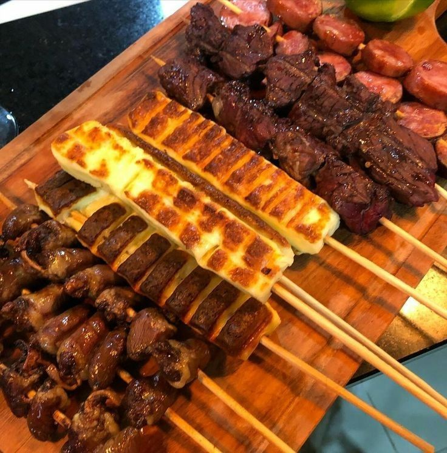
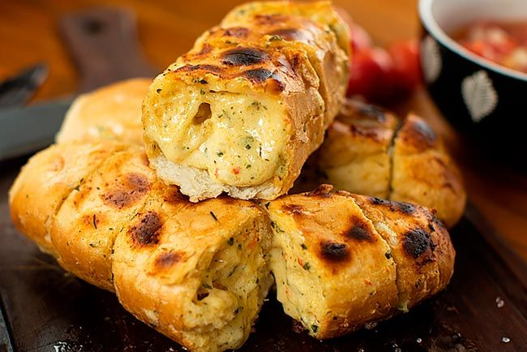

Churrasco sem pão de alho? Nem pensar!
Aprenda a fazer o melhor pão de alho caseiro e vire a lenda do churrasco!
Opa, tudo certo? Você já acendeu a churrasqueira, chamou os amigos, pegou a carne, mas... cadê o pão de alho? Relaxa! Nada de comprar aquele industrializado sem graça. Hoje, eu vou te ensinar a fazer um pão de alho caseiro tão bom que até o vizinho vai querer um pedaço. Bora colocar a mão na massa e garantir o acompanhamento perfeito para o seu churras!
Pão de Alho Caseiro Perfeito para o Seu Churrasco!

Ingredientes:
- 4 pães franceses (ou tipo baguete)
- 4 dentes de alho bem amassados
- 3 colheres de sopa de maionese
- 2 colheres de sopa de manteiga derretida
- 2 colheres de sopa de requeijão cremoso (opcional, mas deixa sensacional!)
- 2 colheres de sopa de salsinha picada
- 100g de queijo parmesão ralado (porque queijo nunca é demais)
- Sal e pimenta-do-reino a gosto
Modo de Preparo:
- Prepare o creme de alho: Em uma tigela, misture a manteiga derretida, a maionese, o requeijão, o alho amassado e a salsinha. Tempere com sal e pimenta a gosto.
- Corte os pães: Faça cortes no pão sem separá-los completamente, criando "fatias" para o creme penetrar bem.
- Espalhe a mistura: Com uma colher ou pincel de cozinha, espalhe o creme de alho generosamente entre as fatias e sobre os pães.
- Adicione o queijo: Polvilhe o parmesão ralado por cima para dar aquele gratinado perfeito.
- Hora de assar: Leve os pães à churrasqueira em fogo médio por aproximadamente 5 minutos, ou até dourar e derreter o queijo. Se for assar no forno, pré-aqueça a 200°C e asse por 10 a 15 minutos.
- Pronto! Agora é só servir e ver todo mundo babando no seu pão de alho caseiro.
Viu só como é fácil? Agora você nunca mais vai precisar daqueles pães de alho sem graça do mercado! Com essa receita, seu churrasco vai subir de nível, e seus amigos vão te pedir a receita (ou pelo menos mais um pãozinho). Agora é só aproveitar, porque churrasco bom é churrasco com pão de alho de verdade!